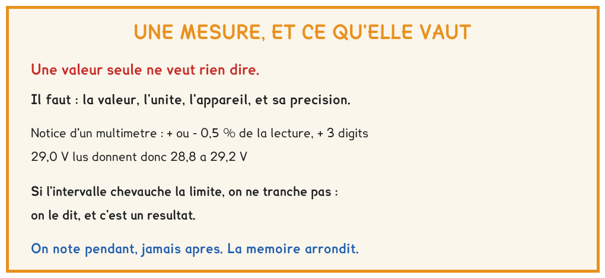

BTS FED option C · 1re année
L'épreuve E5et votre première situation de CCF
Coefficient 5, deux situations, et la première a lieu cette année, en semaine 18, sur le fil B. Elle évalue une seule compétence, C7, réaliser des essais et des mesures. Cette fiche dit ce qu'on attend de vous, pièce par pièce, et comment s'y préparer dès la première mesure.
8 questions · 4 exercices · 5 replis · 3 figures
Savoirs travaillés
Coefficient 5, et la première situation cette année
L’épreuve E5, « Interventions sur les systèmes », pèse coefficient 5 : autant que la conduite de projet, plus que l’écrit d’étude des systèmes. Elle ne se passe pas en juin devant un jury inconnu : elle s’évalue en deux situations, organisées dans l’établissement par vos professeurs, au cours des deux années.
| Situation | Quand | Compétences évaluées |
|---|---|---|
| 1 | avant la fin de la 1re année, ici en semaine 18 | C7 réaliser des essais, des mesures |
| 2 | avant les congés de printemps de la 2e année | C6 mettre en œuvre des outils de pilotage · C8 vérifier, adapter les performances |
Le référentiel écrit que la situation 1 « sera réalisée avant la fin de la première année de formation ». Elle est placée en semaine 18, sur le fil B, pour garder huit semaines de marge : un absent, un système en panne ou une situation à refaire ne coûtent alors rien.
Pour aller plus loin
Une séance, pas un examen à partPour aller plus loin›
Le référentiel précise que l’évaluation par CCF « s’inscrit dans la continuité des enseignements et ne donne pas lieu à des procédures spécifiques » : la situation prend appui sur une activité réaliste, intégrée à la formation. C’est une séance d’atelier de quatre heures, sur un système que vous connaissez, dont on a décidé à l’avance qu’elle serait évaluée.
Vos professeurs rédigent ensuite un rapport argumenté et proposent une note. Cette proposition est présentée au jury après une réunion d’harmonisation académique, présidée par l’inspection : c’est cette réunion qui arrête les notes. La grille récapitulative est donnée chaque année par la circulaire nationale ; elle n’est pas dans cette fiche.
Ce que C7 vous demande, ligne par ligne
Six lignes, chacune avec ce que le référentiel attend d’observer. Elles se lisent comme le déroulé de la situation : d’abord le dossier, puis la mesure, enfin l’interprétation.
| Sous-compétence | Ce que vous devez montrer | |
|---|---|---|
| C7-1 | Analyser un dossier | Vous choisissez, dans le dossier remis, les documents qui servent à l’essai, et vous laissez les autres de côté. |
| C7-2 | Identifier les normes et les réglementations | Vous nommez la norme ou la règle qui dit ce que l’essai doit vérifier, et vous prenez le document qui correspond à cet essai-là. |
| C7-3 | Respecter les procédures | Vous suivez la fiche de procédure dans l’ordre, sans sauter d’étape ni en ajouter. |
| C7-4 | Conduire les essais, les mesures | Vous mettez le matériel en œuvre correctement, et les règles de sécurité sont respectées du début à la fin. |
| C7-5 | Choisir et utiliser des appareils de mesure | Vous choisissez l’appareil adapté à la grandeur cherchée, et vous l’utilisez correctement : calibre, branchement, lecture. |
| C7-6 | Interpréter les résultats | Vous analysez et expliquez les écarts entre vos résultats et les valeurs attendues, et vous dites avec quelle précision vous pouvez conclure. |

C7-6 est la ligne qui se perd le plus souvent. « 28 V, c’est presque 30, donc c’est bon » n’est pas une interprétation : c’est une lecture sans marge. Le référentiel demande que la précision des résultats soit appréciée, autrement dit chiffrée, avant toute conclusion.
Pour aller plus loin
Pourquoi la sélection des documents compte autant que la mesurePour aller plus loin›
Un dossier de situation contient toujours plus de pièces qu’il n’en faut : des fiches d’appareils qui ne sont pas installés, une version périmée d’un schéma, une norme qui ne concerne pas l’essai. C7-1 et C7-2 s’observent précisément là : dans ce que vous prenez, et dans ce que vous écartez.
Ne pas lire tout le dossier n’est pas une faute, à condition d’avoir lu la fiche de procédure jusqu’au bout et d’avoir trouvé la valeur de référence. Lire tout le dossier sans savoir ce que l’essai doit vérifier en est une.
La fiche d’essai
Une fiche d’essai est le document qui rend une mesure exploitable par quelqu’un qui n’était pas là. Elle tient sur une page et suit toujours le même ordre.
| Rubrique | Ce qu’on y écrit |
|---|---|
| Objet | ce que l’essai doit vérifier, en une phrase, et sur quel équipement |
| Procédure | les étapes suivies, dans l’ordre, avec la référence de la fiche de procédure ou de la norme |
| Matériel | chaque appareil de mesure, son calibre, et sa précision relevée dans la notice |
| Valeurs attendues | la valeur de référence et sa tolérance, avec le document d’où elles viennent |
| Valeurs mesurées | chaque valeur, son unité, et les conditions de la mesure |
| Écart | la différence entre la valeur mesurée et la valeur attendue, dans la même unité |
| Incertitude | l’encadrement de chaque valeur mesurée, calculé avec la précision de l’appareil |
| Conclusion | conforme, non conforme, ou impossible de trancher avec cet appareil ; puis la cause probable et la suite à donner |
Incertitude d’un multimètre : ± x % de la lecture, ± n digits
- x %: la part proportionnelle, calculée sur la valeur affichée
- n digits: n fois le pas du dernier chiffre affiché, dans le calibre utilisé
- encadrement: la lecture, moins puis plus la somme des deux parts
La notice donne x et n pour chaque calibre. Un calibre trop grand agrandit le pas du dernier chiffre, donc l’incertitude.
Un écart est significatif lorsque les deux encadrements ne se recouvrent pas. S’ils se recouvrent, l’appareil ne permet pas de trancher, et l’écrire est un résultat, pas un aveu.
Pour aller plus loin
Un exemple chiffré, de la lecture à la conclusionPour aller plus loin›
Un multimètre annoncé à ± 0,8 % de la lecture et ± 2 digits affiche 12,6 V sur un calibre dont le dernier chiffre vaut 0,1 V. La part proportionnelle vaut 0,008 × 12,6, soit 0,10 V ; la part des digits vaut 2 × 0,1, soit 0,20 V. L’incertitude vaut donc 0,30 V, et la tension se trouve entre 12,3 V et 12,9 V.
Si la fiche technique exige 12 V ± 5 %, la plage admise va de 11,4 V à 12,6 V. Les deux plages se recouvrent entre 12,3 V et 12,6 V : cet appareil ne permet pas de conclure. La suite à donner s’écrit alors sur la fiche : reprendre la mesure sur un calibre plus fin, ou avec un appareil plus précis.

Les cinq pièces de la situation
Le référentiel énumère ce que l’on vous remet pour C7. Cinq pièces, et chacune a un rôle dans les six lignes du tableau.
| Pièce | Ce que c’est | Ce qu’elle sert à montrer |
|---|---|---|
| Le système | une installation réelle, en état de fonctionner : ligne bus, lien VDI, maquette | C7-4, C7-5 : on ne mesure pas sur un simulateur |
| Le dossier technique | schémas de câblage, paramètres, plan d’implantation | C7-1 : choisir les pièces utiles |
| Les fiches constructeurs | plusieurs notices, dont certaines ne concernent pas l’essai | C7-1, C7-2 : trouver la valeur de référence et sa tolérance |
| Les appareils de mesure | plusieurs appareils posés sur la table, tous ne conviennent pas | C7-5 : choisir d’après la grandeur cherchée |
| La fiche de procédure | les étapes de l’essai, dans l’ordre, sans les valeurs attendues | C7-3 : la suivre ; C7-6 : c’est vous qui interprétez |
La fiche de procédure dit comment mesurer, jamais ce qu’on doit trouver. La valeur attendue se cherche dans le dossier et dans les notices : c’est une partie du travail, pas un oubli du sujet.
Ce que vous rendez à la fin des quatre heures : la fiche d’essai remplie, et un compte rendu d’une page qui reprend la valeur mesurée, l’écart, la cause identifiée et la suite proposée. Le référentiel le précise : c’est le contenu du compte rendu qui est lu, non sa forme.
Le calendrier de l’année
Rien de la situation 1 n’est nouveau le jour de l’épreuve. Chaque geste a été pratiqué avant, et le tableau dit où.
| Semaine | Fil | Ce qui se prépare |
|---|---|---|
| 1 | B | le relevé complet : valeur, unité, appareil, précision |
| 4 | B | mesurer sur bus, radio et CPL : la première trace de C7 |
| 8 | B | certifier un lien VDI au testeur, rédiger le procès-verbal de recette |
| 14 | A | la méthode d’essai : procédure, incertitude, fiche |
| 15 | A · B | interpréter un écart, rédiger un rapport · mesurer en courant faible : multimètre, pince, oscilloscope, testeur de bus |
| 16 | B | diagnostiquer une installation en défaut |
| 17 | B | la répétition : une procédure d’essai complète, à blanc, fiche remplie |
| 18 | B | la situation 1 : C7, quatre heures |
La semaine 17 est une répétition sur le même type de système, avec la même fiche. Ce qui a coincé en 17 se corrige avant 18 ; ce qui a coincé en 18 ne se corrige plus.
Ce que la commission regarde
Ce qui est lu, c’est la chaîne de raisonnement : ce que vous avez mesuré, avec quoi, ce que vous en concluez, et avec quelle marge. Un nombre seul, même juste, ne dit rien de tout cela.
Un compte rendu qui se lit sans vous contient six choses, et elles suivent l’ordre de la situation.
- La procédure a été lue jusqu’au bout avant de brancher quoi que ce soit.
- L’appareil a été choisi d’après la grandeur cherchée, et son calibre d’après l’ordre de grandeur attendu.
- La sécurité a été respectée de bout en bout : consignation, vérification d’absence de tension, moyen d’accès si l’appareil est en hauteur.
- Chaque valeur porte son unité, son appareil et son calibre.
- Chaque valeur porte son encadrement.
- La conclusion compare l’encadrement entier à la valeur exigée, et dit ce qui vient ensuite.
Pour aller plus loin
Les erreurs les plus fréquentes, dans l'ordrePour aller plus loin›
Mesurer sans avoir lu la procédure. On obtient un nombre, et on ne sait pas à quoi le comparer.
Conclure sans marge. « C’est presque la valeur, donc c’est bon. » C’est exactement ce que la ligne C7-6 refuse.
Sortir l’appareil par habitude. Le multimètre pour tout, y compris là où il ne mesure pas la bonne grandeur, ou là où il obligerait à ouvrir un circuit en service.
Oublier les unités. Un relevé sans unité n’est pas vérifiable, donc pas interprétable.
Recommencer sans le dire. Une mesure reprise trois fois avant d’obtenir « la bonne » n’est pas reproductible, et cela se dit : c’est un résultat.
Négliger la sécurité. C7-4 la nomme explicitement : une mesure sous tension sans vérification préalable n’est pas un essai correctement conduit, quel que soit le nombre obtenu.
Vérifier que c’est acquis
- L’épreuve E5 pèse : coefficient 5 | coefficient 2 | coefficient 4
- La situation 1 évalue : C7 seulement | C6 et C8 | C6, C7 et C8
- Elle a lieu : avant la fin de la première année | avant les congés de printemps de la 2e année | en juin de la 2e année
- La fiche de procédure contient : les étapes, dans l’ordre | les valeurs attendues | le résultat à trouver
- Dans « ± 0,5 % de la lecture, ± 3 digits », les digits comptent : trois fois le pas du dernier chiffre affiché | trois pour cent de plus | trois volts
- Deux encadrements qui se recouvrent, c’est : un écart qu’on ne peut pas déclarer significatif | un écart significatif | une erreur de mesure
- Ce que la commission lit dans le compte rendu : le contenu, pas la forme | la forme, pas le contenu
- Un appareil de mesure se choisit : d’après la grandeur cherchée | d’après l’habitude | d’après sa taille
S’entraîner
Exercice · D1-1
L’incertitude d’un multimètre
La notice d’un multimètre annonce, sur le calibre utilisé, une précision de ± 0,5 % de la lecture, ± 3 digits. L’afficheur indique 29,4 V et son dernier chiffre vaut 0,1 V.
De combien de volts faut-il encadrer cette lecture, de part et d’autre ?
Exercice · B8-1
Encadrer une mesure
Vous lisez 28,7 V aux bornes de l’alimentation d’une ligne bus, en charge, sur un calibre dont le dernier chiffre vaut 0,1 V. La notice du multimètre annonce ± 0,3 % de la lecture, ± 2 digits. Écrivez le relevé complet, tel qu’il figurerait sur la fiche d’essai.
- J’ai calculé la part proportionnelle à partir de la valeur affichée
- J’ai ajouté la part des digits, convertie en volts
- J’ai écrit la valeur basse et la valeur haute de l’encadrement
- J’ai noté l’unité, l’appareil, le calibre et les conditions de la mesure
- J’ai dit si cette tension permet à un participant du bus de fonctionner
Exercice · D1-1
Un écart significatif ?
Sur la même ligne bus, vous mesurez 29,6 V à vide et 29,1 V en charge, avec un multimètre annoncé à ± 1 % de la lecture, ± 2 digits, dernier chiffre 0,1 V. La chute de tension en charge est-elle significative ? Rédigez la réponse en quatre lignes, comme sur la fiche d’essai.
- J’ai calculé l’incertitude de chacune des deux mesures
- J’ai écrit les deux encadrements
- J’ai regardé si les deux encadrements se recouvrent
- J’ai conclu en disant si cet appareil permet ou non de trancher
- J’ai proposé ce qu’il faudrait pour trancher, si ce n’est pas possible
Exercice · D2-2
Rédiger une conclusion d’essai
Un lien VDI vient d’être posé entre le panneau de brassage et une prise de bureau. Le procès-verbal exige un lien permanent de 90 m au plus. Le testeur, annoncé à ± 2 % sur la longueur, mesure 93,5 m ; la continuité et le câblage des paires sont corrects. Rédigez la conclusion de la fiche d’essai en trois ou quatre lignes.
- J’ai écrit la valeur mesurée avec son unité, l’appareil et les conditions
- J’ai écrit l’encadrement obtenu avec la précision de l’appareil
- J’ai comparé l’encadrement entier à la valeur exigée, et non la seule lecture
- J’ai conclu par conforme, non conforme, ou impossible de trancher
- J’ai proposé une suite : une cause probable, une correction, ou une seconde mesure
C6 et C7 : ce qui distingue les deux situations
Pour aller plus loin
La situation 2 de l'an prochain, et pourquoi elle n'est pas celle-ciPour aller plus loin›
C7, cette année, c’est mesurer. On vous remet un système qui fonctionne, ou qui est censé fonctionner, et vous dites, chiffres à l’appui, s’il est conforme et avec quelle marge. Vous ne modifiez rien : vous constatez, vous interprétez, vous proposez.
C6, l’an prochain, c’est faire fonctionner. Le référentiel la nomme « mettre en œuvre des outils de pilotage » : programmer, paramétrer, configurer un système de traitement de l’information. Ce qui est attendu est que les outils numériques soient maîtrisés, que le fonctionnement obtenu soit conforme au cahier des charges et au souhait du client, et que la notice d’utilisation soit élaborée et expliquée.
La situation 2 y ajoute C8, vérifier et adapter les performances : après avoir mis en service, on mesure de nouveau, et on règle. Elle a lieu avant les congés de printemps de la deuxième année.
Le TP noté de la semaine 14, É2, entraîne déjà C6 : une fonction imposée à réaliser, et sa notice. Les deux situations se répondent : cette année, vous apprenez à mesurer ce que quelqu’un a mis en service ; l’an prochain, vous mettez en service et vous mesurez ce que vous avez fait.
Ce que la situation 1 demande tient en une phrase : mesurer avec l’appareil qui convient, en sécurité, et dire avec quelle marge vous concluez.
Cette fiche explique l'épreuve. Elle ne contient ni barème ni grille : ceux-ci sont fixés chaque année par la circulaire nationale. Rien de ce que vous saisissez n'est enregistré.